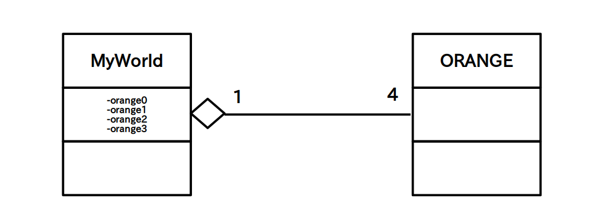

ここでは「関連」の一種である「集約」について学びます。
「集約」は「一方のクラスがもう一方のクラスの構成物になっている」あるいは「一方のクラスがもう一方のクラスを所有している」などの主従関係を明確に示すために使われます。
「集約」をクラス図で表す場合はマスター側のクラスに中抜きのダイヤマークを付けます。
この関係を英語で書くと
A has a B : A は B を持っている
となりますので、「集約」は別名「has a 関係」と言います。
例えば、前のページで挙げた関連の例

の場合は「ORANGE は MyWorld を持っている」という解釈は(SFとかならともかく)変なので、普通は「MyWorld は ORANGE を持っている」と解釈されます。
従って次のように「集約」を使って明確に MyWorld がマスターであることを示せます。

さてこれで MyWorld と ORANGE の主従関係が明らかになりましたので、MyWorld のコードは次のように書くことが出来ます。
「集約」のコーディング方法には色々なやり方があるのですが、以下の例のようにマスター側クラスのフィールドとしてスレーブ側クラスのインスタンスを定義するのが「集約」の例として一番分かりやすいと思います。
public class MyWorld{
private ORANGE orange1,orange2,orange3,orange4;
public MyWorld() // コンストラクタ
{
orange1 = new ORANGE();
orange2 = new ORANGE();
orange3 = new ORANGE();
orange4 = new ORANGE();
}
}
※ ちなみに上の例は一般的には「集約」ではなくて「コンポジション」と呼ばれます。「コンポジション」については自分で調べてみて下さい。
なお、中抜きダイヤマークが多いとクラス図が見辛くなるので、主従関係が明らかな場合は中抜きダイヤマークを省略して「関連」だけで済ますことも多いです。
どの状況では「関連」を使って、どの状況では「集約」を使うべきかという具体的な決まりは特にありませんので、自分でやり易いやり方を見つけたり、所属するチームのやり方に従って下さい。